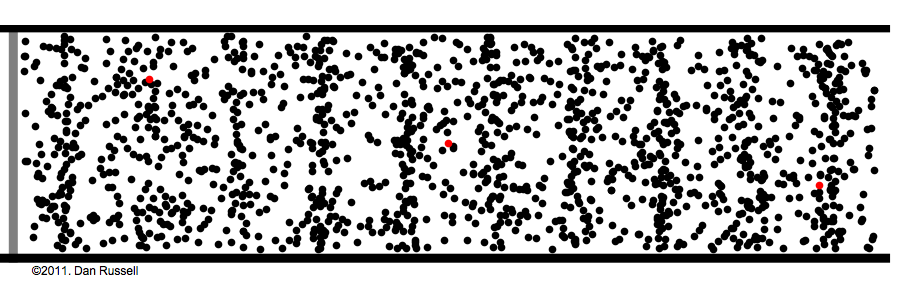
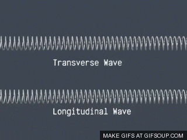
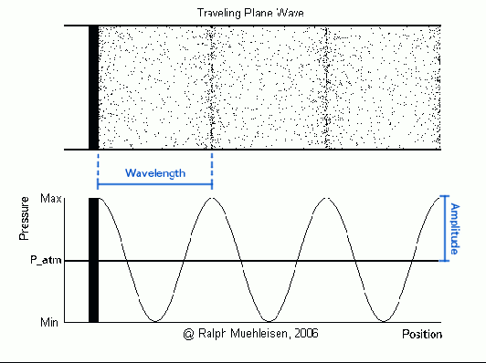
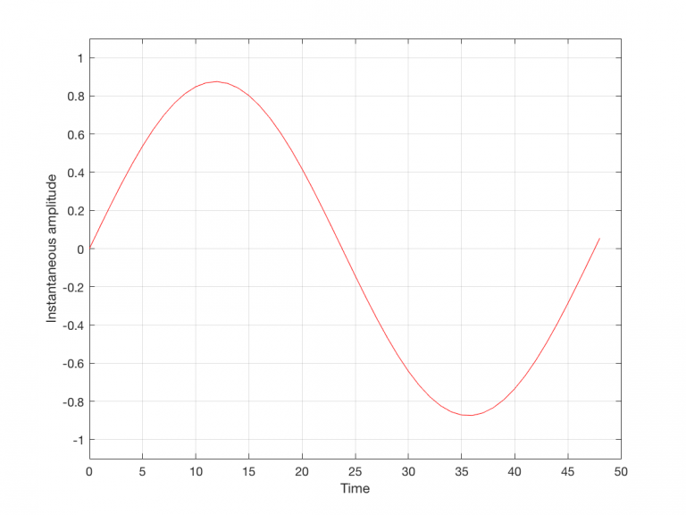
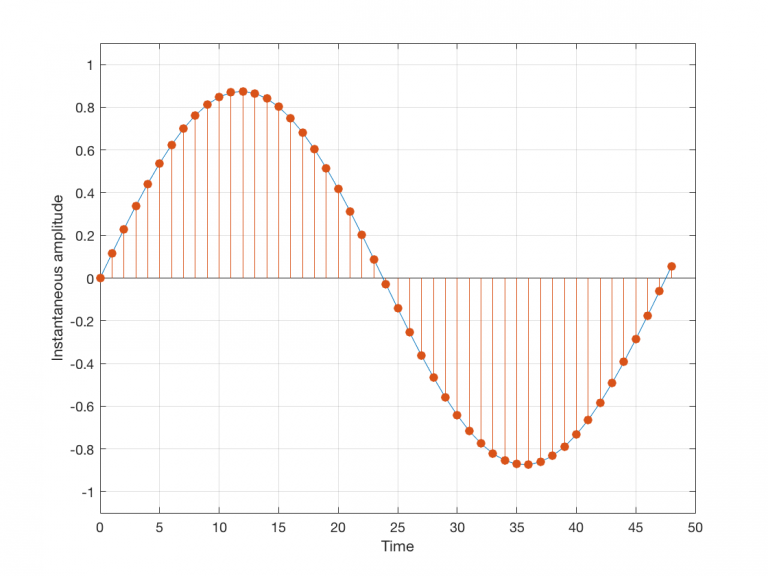
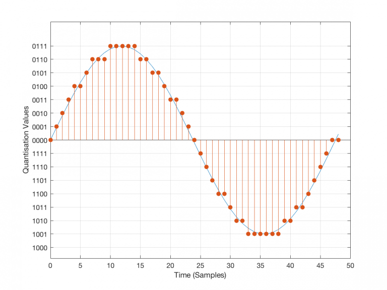

We all know what sound is, you cant avoid it. In fact, there is a whole industry devoted to
trying to do
just that - sound isolation can be expensive and it's actually really hard to do.
An important thing I'd like to point out is that sound is a physical occurrence which happens in
the real
world: something has to move to create sound waves. The speakers on your computer can make sound
waves, but
sound
waves can not be made by software or with any amount of fancy coding.
So what makes sound?
Vibrations.. When an object vibrates, energy is passed on to air particles surrounding the
object making
them vibrate; in turn they vibrate, bumping into neighboring particles, causing a domino effect
until
particles are vibrating at our ear drums. Notice in the animation that although there is the
illusion of
continual forward motion; the red dots in the animation show how the particles always remain
relative to
their stationary position. There are moments when the particles are densely populated
(compression) and
moments when they are sparsely populated (rarefaction). Here's a link to a site
which explains
it more
thoroughly - i particularly like the earthworm analogy.
https://waitbutwhy.com/2016/03/sound.html

Something I found really interesting in the last link was the claim that the usual graphed
representation of
a sound wave isn't how sound works at all.. That's why I liked the earthworm in it so much, and
why I think
it is important to make a distinction between the terms. The earthworm moves in a similar motion
to a
'real'
sound wave - movement through 'compression' and 'rarefaction'. This is called a
longitudinal
wave , as its
vibrations occur along one axis.
It's not that easy to graph a longitudinal wave without it looking more like the motion of a
transverse wave
, which is where the confusion lies. An example of a transverse wave would be the movement of a
guitar
string - the vibrations in a guitar string moving up and down whilst played are at right angles
to the
direction the sound wave travels. Without getting you too dizzy, here's are some more gifs, one
comparing
the movement of a transverse wave and a longitudinal wave and one which I think best depicts the
relationship between a longitudinal wave and a graphed waveform.


Luckily both these waves share the same characteristics; the two most important are shown in the
previous animation, the wavelength and the amplitude.
The wavelength is a measurement of a single cycle, in the above representation
that's the
distance
between one peak to the next expressed in meters. A similar measurement is the cycle period
which is the
time taken for a cycle to complete measured in seconds.
The amplitude is a measurement taken from the baseline to the maximum extent of
the wave,
it's
a
measurement of the sound pressure level (SPL) and more commonly converted to dB's
The definition of a 'Signal' on wikipedia is:
"..a function that conveys information about a phenomenon"
So what's a function? Wiki defines a function as:
"..a process that associates to each element of a set X a single element of a set Y"
For the most part if we are trying to "convey information about a phenomena", the
set X will be
discrete measurements of time and Y can be any
secondary data we might have. Mathematically the previous animation is a graphed sine function,
in this case
the X coordinate denotes time and the Y
coordinate amplitude.
Analog signals are continuous in time and amplitude, whereas Digital
signals are a
discrete set of amplitudes in time.
Any real sound made by the process of compression and rarefaction can be converted
to electric
signals and back again using
transducers, (microphones and speakers), both examples of analog signals. Likewise
these
electric signals can be converted to
digital signals using an Analog to Digital Converter (ADC) and back again with a
Digital
to Analog Converter (DAC).
Without getting in too deep, the process of the ADC involves two main concepts,
Sampling and
Quantisation.
This can be best described using a series of figures, so we come back to the humble sine wave.
fig 1. Original signal
fig 2. Sampled signal
fig 3. Quantised
signal
Figure 1 depicts an analog signal, a sine wave with continuous time on x axis and continuous
amplitude on
the y axis. In order for a digital system to represent that signal the ADC
must take measurements of the amplitude at regular intervals, this is dictated by the
sample
rate; the more samples that are taken the better the representation of the input
signal will be.
Figure 2 depicts that same signal being sampled with a samplerate of 48k, that's 48000 samples
per second.
Just as the digital system forces us to take these measurements at discrete intervals in time,
the system
also forces us to measure the amplitude in discrete steps, this is called
quantisation and it
is dictated by the bit rate. A dipiction of this process is shown in figure 3.